How to build a fish (not easy)
First a few informations to read
On some systems (Linux KDE/Gnome and SGI IRIX 4dwm), there is a
program icon fuer "dune4kids", it looks something like this:


On systems like Micro$oft Windows or MacOSX there is only one (other)
programm icon:


Normally, the program of this icon starts with the english full version,
usually with very much icons and too much menues.

In this case, you have to switch to dune4kids.
You have to
click here to switch to the right version.

What to do, if the program crashes ?
With a bit of luck, you can load the last situation, if there is a
new ".dune_crash" file in the list of recent files.

Navigation
Navigation means the movment in the 3D modell.
This is important, cause it can happen very easily, that you get inside or
behind your peace of work and see therefore nothing.
When you see nothing there are two way to continue, ofthen you use this
ways together:
- Move backwards
You can go forwards and backwards, if you press together the
left mouse button and the "Shift" key on the keyboard and move the
mouse up and down.
If you use "Examine" (when the icon  is pressed)
this also works with the middle button of a 3-button mouse.
If there is a mouse with a scroll wheel, you have to press the mouse
wheel.
is pressed)
this also works with the middle button of a 3-button mouse.
If there is a mouse with a scroll wheel, you have to press the mouse
wheel.
- Turn the 3D world
If you press both the left mouse button and the "Control" key on the
keyboard and then move the mouse, the whole 3D world turns around.
Usually this is used to look all sides of a object, but als helps
if you are into the void.
Then content could be not only behind, but also left, right, up or
down.
You need to turn around a lot to find your object.
Additionally there you can press together the left mouse button, the "Shift"
key and the "Control" key and move the mouse (or use the icon
 ). This results in the movement in direction
of the screen plane: up, down, left and right.
). This results in the movement in direction
of the screen plane: up, down, left and right.
After you find the object and moved near to it, you should press again the
"Examine" icon in order to continue to work normally.
You should also select the object and press the icon
 , so you can turn the object as usual.
, so you can turn the object as usual.
Icons for changes
In Order to show, how things are changed, a box is created.

Icons, to changed whole objects:
- Move:


- Rotate:


- Scale:


- uniform scale:


- move center of rotation:


With small white boxes you can change the objects itself.
With the single arrow icons  you can select the direction.
you can select the direction.
For example if only the green arrow is pushed,
 you can move the little box
you can move the little box

only into the direction of the green arrow.
 .
.
In the same way as arrows grabed by the stem to move inside a plane,
you can also push two arrows  in one time
to move a little box in one plane.
in one time
to move a little box in one plane.
How to build a fish (not easy)
You don't have to obey the following description exactly, but should
(at least at the first reading) stick to the clue.
A fish will be constructed from a several parts: a torso with a mouth,
several fins and two eyes.
Torso
The torso consists of a mathematical cone.
You have to use New -> Cone

If "Cone" is selected, you can change the height and the width of the cone
with the move of the small white boxes (click to the small boxes, keep the mouse
button pressed and move the mouse).
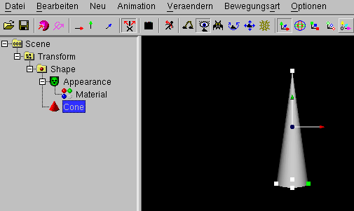
Later the low circle of the cone will be folded and forms the mouth.
A lot of fishs have a small mouth, therefor the width of the cone should
be rather small. The decision if it will be a thin fish or a fat fish will
be done later.
In order to fold the lower circle of the cone, the cone must be deformable.
Therefore the next command (after "cone" was selected in the left
window)
Change -> Make deformable (NURBS)
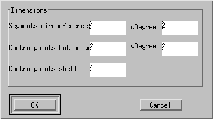
In the next window you can simply click "OK".

Despite the body itself did not change, the little boxes have been changed.
If you move a small box, the body can be changed more exactly (if you
moved now at a white box (only if you moved) you should use
Edit -> Undo, the box moves back).
The white_dune program prefers certian directions.
For examble you can steer a object with the joystick, if the object is in the
right direction.
There is also a matching
Movement -> Stand up command.
Unfortunatly, the torso of the fish is not in the right direction, therefore
"NurbsSurface" has to be selected in the left window. You can use then
Change -> Swap -> y (green) and z(blue).
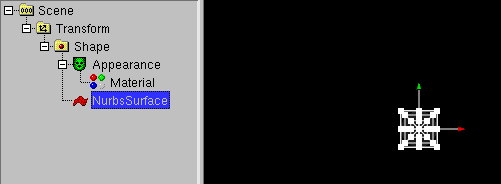
You should now save the intermediate result into a file.
If you exit the program (or switch the power off) anything is lost, if you
did not saved into a file. To save you must use
File -> Save.
A window you can type in something near the lower edge is opened.
Best you type in the word "fish", then a underscore (this character: _),
then the first name, then a underscore (this character: _), then the last name
then a underscore (this character: _), then the age.
If your name is "Max Mustermann" and you are 11 years old:
fish_Max_Mustermann_11
With this you know at the construction of a film, that the file contains
a 3D model of a fish and you have to write "Max Mustermann, 11 Jahre"
together with image of the fish into the credits.
Tou need to use (especially at the end !) File -> Save
often later, otherwise the work is lost.
Now the "Examine" icon should be pressed.
Additionly the icon  for
"X mirrored Modelling" should be pressed (you can change it with
ggf. mit Change -> X mirrored Modelling).
for
"X mirrored Modelling" should be pressed (you can change it with
ggf. mit Change -> X mirrored Modelling).
Click to the torso of the fish. White boxes will appear.
Now you turn your object in a way that you can select with the middle mouse
button (often: the mouse wheel) the small white boxes. The boxes change
their color into green.
The right boxes are the upper (in direction of the green arrow) small boxes
at the circle of the mouth of the fish and the small box beside it.
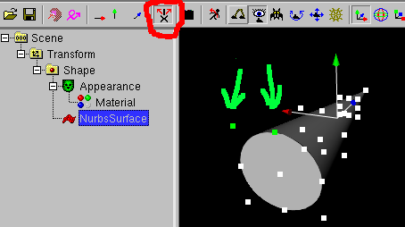
Now you need a calm hand to hit one of the little green boxes (press the
right mouse button) and move the mouse. Now both green small boxes move
together with the x (red arrow) mirrored boxes. The upper part of the
jaw of the fish is created.
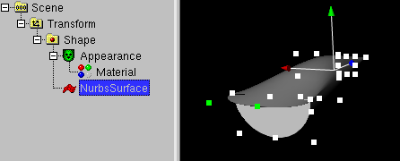
The lower part of the jaw is created the same way.
First you click into the void, to end the selection of the green boxes.
Then you select the lower small box (inverse direction of the green arrow)
at the fish mouth circle and the small box beside it.
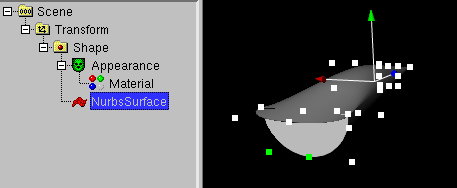
With the pull of the outer small box the lower part of the jaw created.
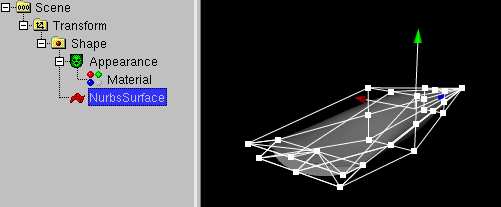
Now you can set the width of the fish. The way is similar to the
upper and lower part of the jaw, you only need to select the small
boxes in the mid of the fish.
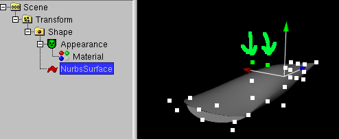
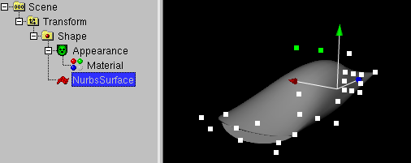
The lower part of the fish is modified in the same way.
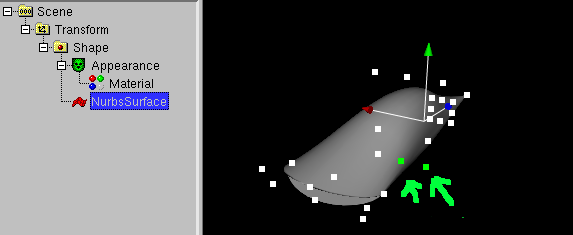
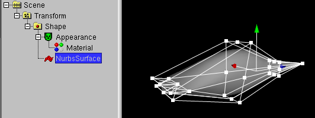
You can also pull at other little boxes (best multiple small boxes at same time)
and look. if the fish gets more beautiful (in worst case you can revert the
changes with Edit -> Undo).
You can also use the scale icon to build a flat fish
(after this you have to switch back to the move icon ).
Fins
Next object is the tail fin. In order you want to move the whole fish
(not move torso and fins by itself) you have to select the "Transform"
command of the torso in the left window before the next step.
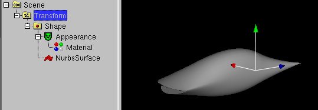
Now you can use New -> Plain -> y (green) and z (blue)).
Then a window opens. The size of the plane is asked, you can simply click
OK.
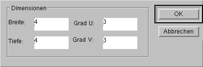
Next you have to move the fin with the blue arraw top at the right place.
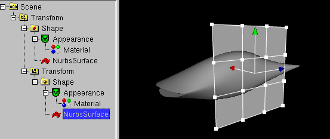
The form of the fin is changed with the move of the small white boxes.
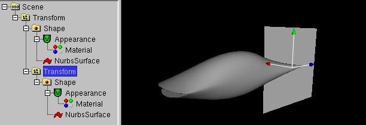
For the back fin and the ventral fin a little trick is used:
they are created from a copy of the back fin.
To do so, you have to select the "Transform" command of the
tail fin,
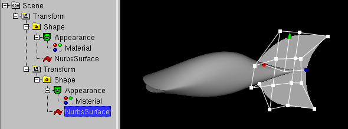
then use
Edit -> copy
immediately followed
by
Edit -> Paste symetric -> x (red).
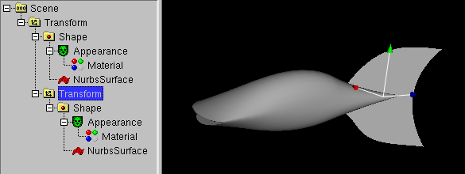
In the first moment, it looks like nothing changed, but the tail
fin exists twice. Cause the second copy is in place of the first,
you see it only in the left window. Now the second copy needs to be
moved into the mid of the fish (with the blue arrow top).
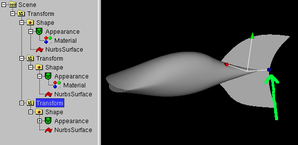
After this, the form of the fin can be changed with the small white
boxes.
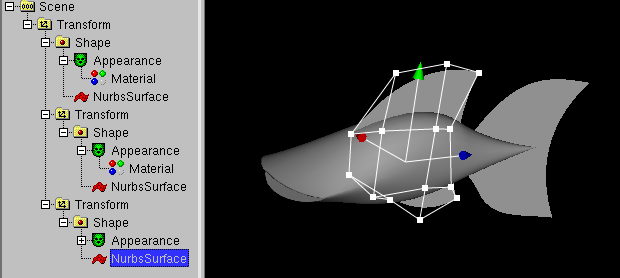
Augen
Next is the construction of the eyes.
First, the left window is cleaned. You clicked to the + icons of the
Transforms of the fins.
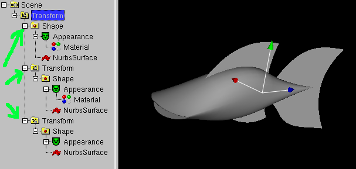
You have to select the "Transform" command of the torso (to most upper
Transform in the left window).
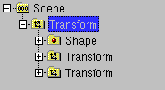
With
New > Sphere
the outer part of the eye
is created.

But this part is too big. With the little small white boxes you make it
smaller and with the arrows you move it to the right place.
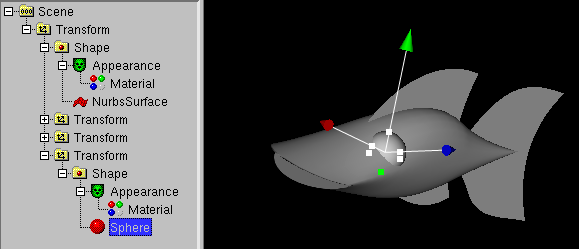
Now it time to construct the eyeball. First you have to select the
Transform of the outer part of the eye.

New > Sphere
is used again.
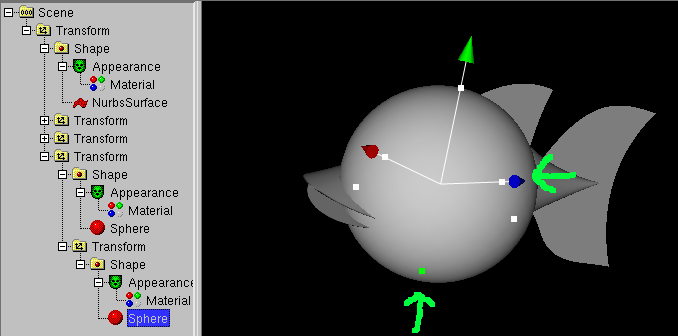
Again, the eyeball is too big. Again it can be scaled with the small white
boxes and can be moved with the arrows (there is no problem if the eyeball
disappear into the eye. Simply select the right "Sphere" in the left
window and the small white boxes and the arrows appear again, dispite the
eyeball is still not visible).
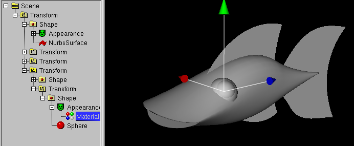
Next we use color. In the left window, a "Material" icon has to be selected
(in case you don't see a "Material" icon, it is hidden in a "Appearance"
icon: you have to click to the + icon of "Appearance").
Now
Change -> Color (need Material or Color) -> Normal
is used. A right window opens. With it you can select a color
and light/dark.
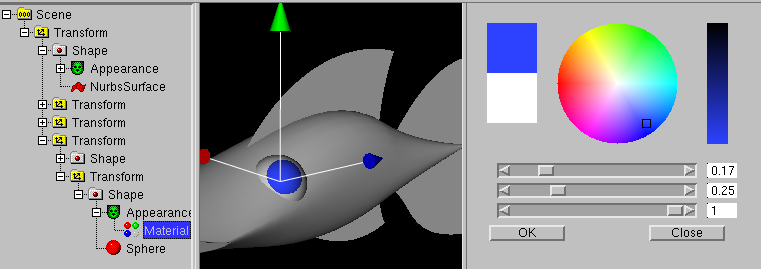
After "OK" has been clicked, you should use
Change -> Color (need Material or Color) -> Gloss.
In order to have a good gloss color, you should select a bright color.

If you like it, you can change the form of the eyes and the eyeball
with Change -> Make deformable (NURBS).
When the eye is ready, you should copy it mirrored.
You need to select the outer part of the eye.
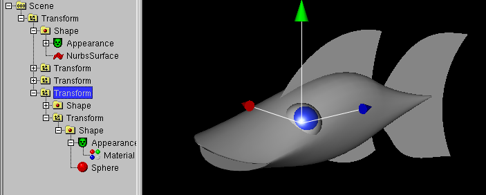
You need to use
Edit -> Copy
and use immediately
Edit -> Paste symetrc -> x (red)
.
A second eye at the other side have been created.
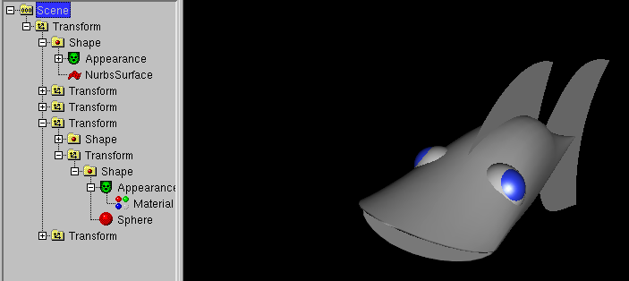
A deeper mouth
A little problem was forgotten and needs to be repaired:
The mouth of the fish looks not natural, if you look inside the mouth.
You have to push back the point in the middle of the mouth.
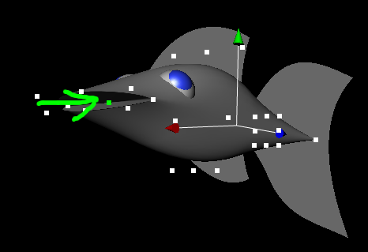
You can do this after the eyes have been created. Outerwise the spheres of
the eyes become visible if the fish opens his mouth.
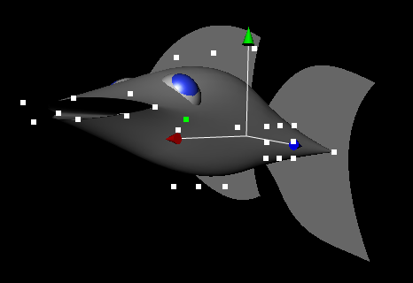
Don't paint it normal gray
In principle, the fish is ready.
Next you can change the color of the torso and the fins.
This is done like the coloring of the eyes, you have to select the
"Material" of the torso in the left window and then use
Change -> Color (need Material or Color) -> Normal / Glow / Gloss.
If you select "Glow" a sort of fluorescent paint is used, you should
use a dark color, otherwise the fish is so light/white, that the rotundities
are not visible.
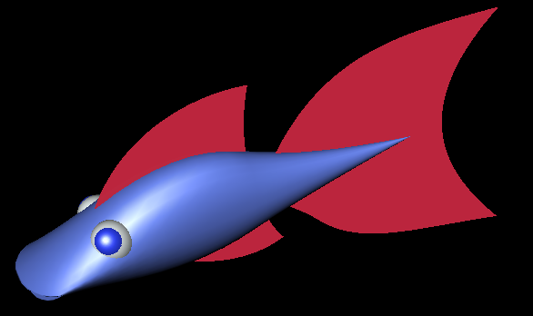
Animation
First, the wiggle of the fish is done (if you would make the movement of the
whole fish first, the fish would swim away from the mouse).
The wiggle movement comes from the torso, therefore the torso needs to
be selected. It is sufficient, to click to the torso.
It is wise to turn the world in a way, that the torso is seen from above.
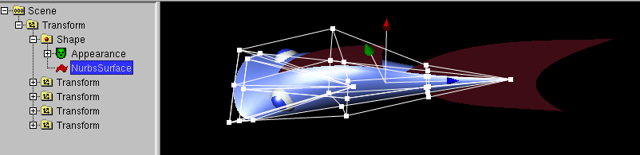
Now use
Animation -> Animate (select object e.g. Transform)
A dialog window opens:
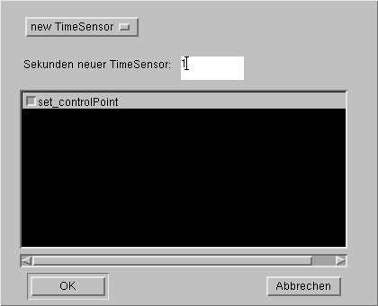
This window asks the duration of the animation, before it repeats.
The default value is 5 seconds, what is far to much for the wiggle.
Useful is a value of 1 second of a half second (a half is written
as 0.5).
Beside this, the window asks what is animated (the points the torso was
made of), but this already selected, so you only have to click "OK".
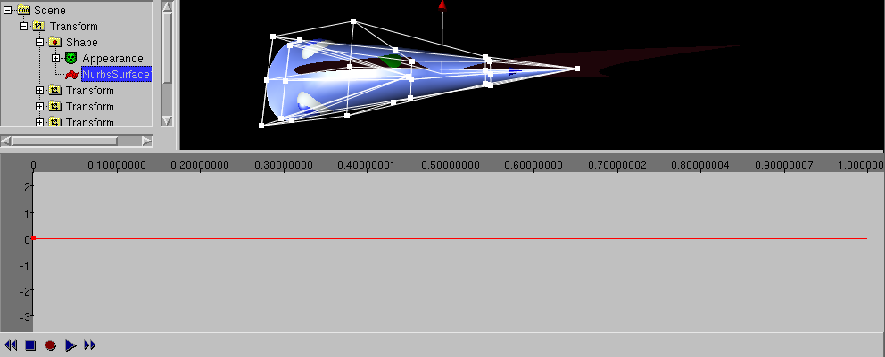
Now the animation window appears. It shows, what is done at what time.
In the animation window points must be set in the middle and at the end
(click to the line), three points must be seen.
So the points of the
torso are on the same position as the beginning at the half of the time
and at the end of the animation.
Beside that, in the skirting under the animation window, the "record" icon
needs to be pressed, now the changes of the animated object will be recorded
as a part of the animation.
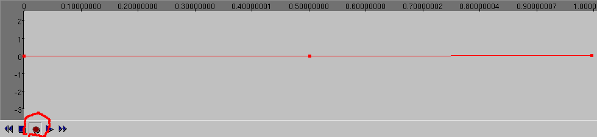
Till here, all changes of the side have been applied to both side.
This is not working for a wiggle. Therefore
Change -> x mirrored modelling has to be clocked, till the small box
before x mirrored modelling is not shown anymore.
In stead of
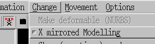
it should look like this:
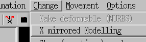
A stingray, a plaice, a dolphin or a whale do not make a wiggle to the side
they make a wiggle up and down. Therefore the small box should be pressed
if you want to make a stingray, whale etc.
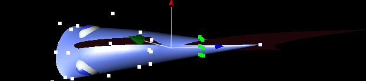
Next, the animation window has to be clicked between the left side and the
mid. A black line blinks the in the first quarter (from left) of the
animation window. The changes are recorded at the position of the black line.
Now you have to catch all points of a ring in the rear part of the fish.
This is done with the right mouse button. You have to position the mouse
left/below the first point you want to select, press the right mouse button
and hold down the button while you move it right/above the last point.
If you release the mouse button, all points between the imaginary square
of press and release are selected and become green.
Then you can move all points if you pull one green point with the left
mouse button.
The animation window changes.
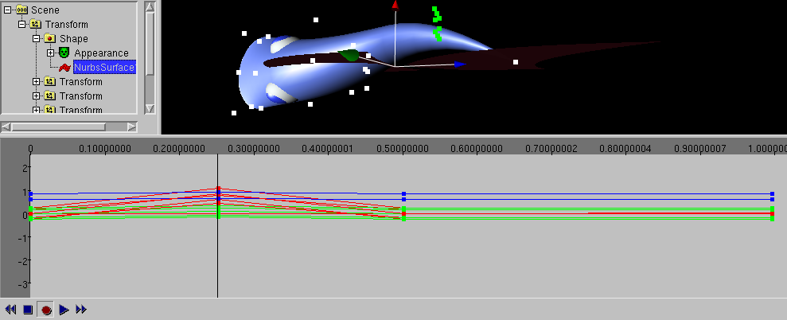
After the the reversal of the movement at a later moment must be done.
First the blinking black line needs to be set at the next time.
To do this, you have click into the animation window between the mid
and the right side. The fish becomes straight-lined (this is a result of
the point in the mid of the animation window).
After this you (select) and move the already used points of the rings to
the other side.
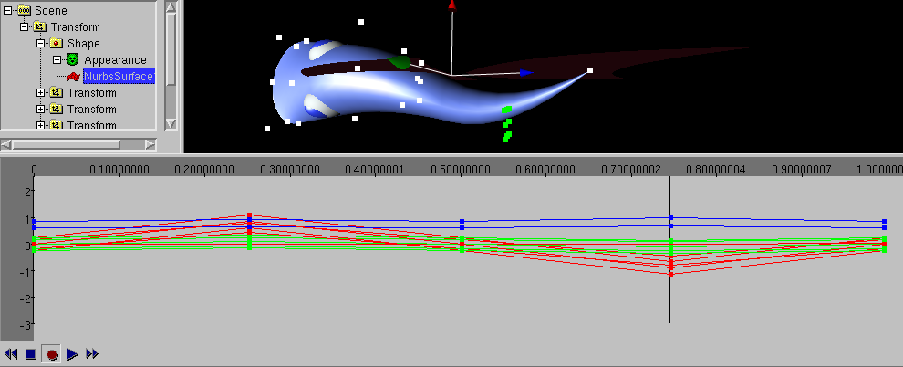
The first wiggle animation is ready. You can play the animation, if you
click the blue square in the strip with the record icon (to end the record)
and the click the blue triangle (to play the animation).
After you have seen the animation you need to press the blue square to
end the animation.
Unfortunatly the rigid fins do not match the wiggle movement. You have to
animate them too. This is nearly done in the same way as the first animation.
You click to the fin and use
Animation -> Animate (select object e.g. Transform)
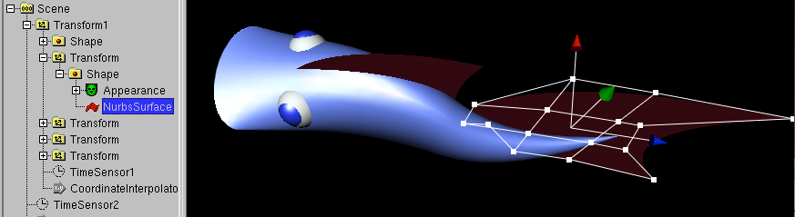
Now a dialog window opens, that asks for the amount of seconds.
At this point, there is a single difference as yet. Instead of 1 second
you select in the top selection "TimeSensor1" instead of "new TimeSensor".
With this, the old movement and the new movement is dupped and run
at the same time.
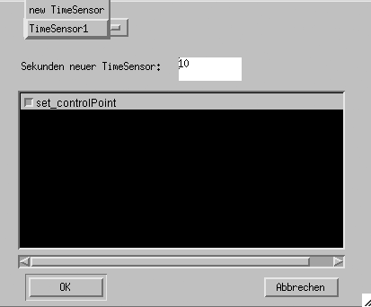
After this anything works as the old animation. You click the 3 points in
the animation window
and so on, and so on...
Vorwärts
After you end the wiggle, the can swim forward.
First you have to set the turn point into the right place, otherwise the
fish moves though the curve in a unnatural way.
To do so, the upper Transform in the left window is selected and
click to the icon for change center.
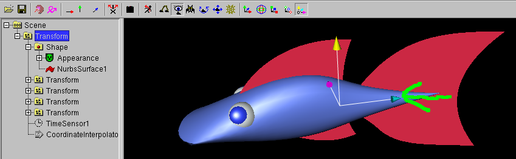
Then you move the center at the right place with the mouse on the top of the
light blue arrow.
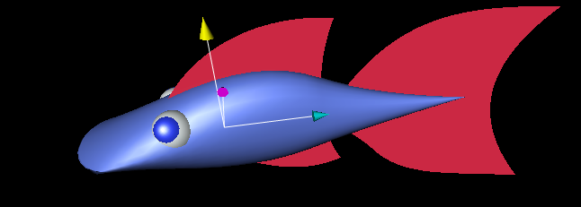
There are two methods, to create a animation:
- with the mouse, a curve will be animated
- with a joystick, the curve will be remote-controlled
Cause a lot of people do not have a joystick (or a gamepad with sicks) first
the method with the mouse.
This method is more simple to learn and the remote-control with the joystick
requires experience (when the object moves into direction of you, you have to
steer to the left to make a curve to the right).
Diese Methode ist einfacher zu lernen, denn das
The first Transform must be selected.
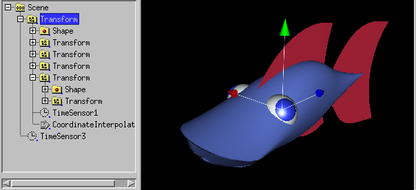
You need to use Animation -> Create Curve Animation (need Tranform)
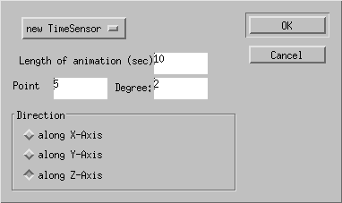
A window occures, with it you can change the lengh of the animation in
seconds, the number of points in the curve and the default direction
of the curve. Enter 10 and 5, and click to "along Z-axis".\br|
Then click to OK.
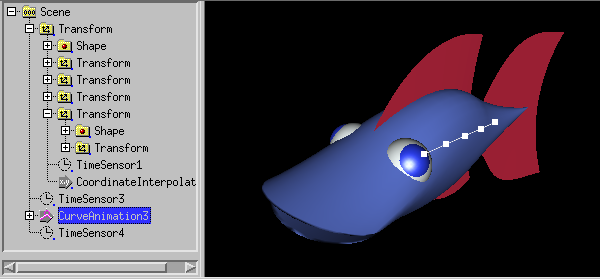
When you press the blue triangle below the windows (that means "Play animation)
you notice, that the fish is moving backward.
You have to mirror the fish in the blue direction
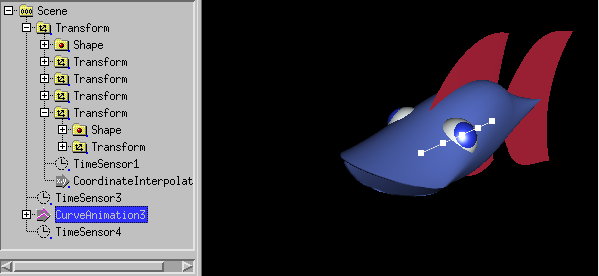
You have to select the Transform of the fish.
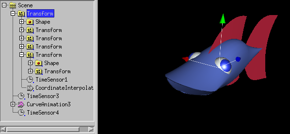
With Change -> Flip -> z (blue) the directions are corrected.
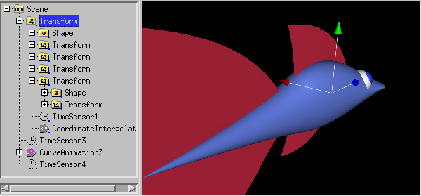
Now you can change the points of the curve. In order to build a plane curve
you should click to Movement -> x only (red) und
Movement -> z only (blue) benutzen.
In this case, the boxes in the first strip show that the red and the blue
arrow is pushed.
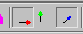
Here 3 snapshots show, that the fish follows the curve.
In order to create a robust VRML97 animation, the CurveAnimation node
should be selected and use Change -> Change to -> to Standard Interpolators
, to let te file displayed in any VRML97 browser. A solution exist in
almost all VRML97 browsers, but not in freewrl.
For the second method, you use a joystick (or a gamepad with 2 thumbsticks).
It has to be installed with Options -> InputDevice Settings in
the full version of white_dune. In this case there are a few more non gray
icons in the upper strip. The best configuration for the movement with
the joystick is the icon that meas "hover" and looks a bit like a hovercraft.
Now you click to the upper Transform in the left window and use
Animation -> Animate (select object e.g. Transform)
In the following dialog window, "translation" and "rotation" are already
selected, so you only have to click "OK".
Now you only need to push the icons in the lower strip for "record"
(red circle) and "play animation". You can record the movement of the
fish, which is remoely controlled by the joystick.
You should fill only one animation window with animation data and not
overwrite old animation data, cause on slow machines you can get easily into
jerking.
When something got wrong (happens often) you can select a range in the
animation window (with press and hold down the left mouse button and
move the mouse in direction of the width of the window) to use
at once Edit -> Delete to erase the range of the
animation. If you do not use at once Edit -> Delete but click
to anything diffent, something may be lost (try Edit -> Undo
in case).
Done !